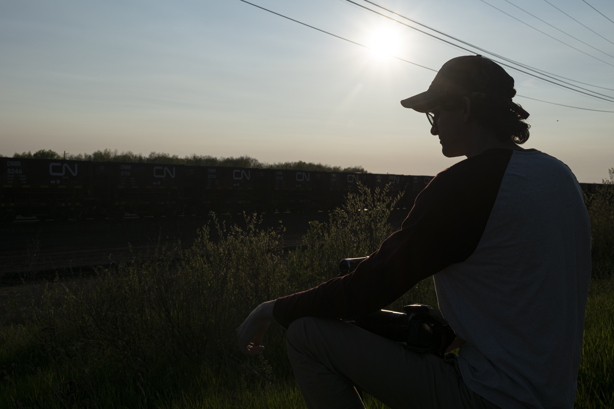

Hello, I’m Noah Bolte, and welcome to my page. I grew up in the Cedar Rapids area, and a lot of my interests trace back to the landscapes, rivers, and transportation corridors that cut through eastern Iowa. I’ve always been drawn to the Mississippi River, nature, and more recently, the kinds of spatial phenomena that make certain places feel connected in ways you don’t always notice at first glance. I am interested in the rail and shipping transportation industries, ornithology, geographic information systems, video editing, and the push pull dynamics between the natural world we live in and the man made impact on the environment. I’m involved in a past and present railroad photography/videography club, a couple birding clubs, and have created video and photo content of these subjects for years. I discovered GIS only about two years ago, and while a challenging subject in many regards, I’ve found it to be quite rewarding in the long run. Since then, I’ve developed an interest in mapping and am constantly wanting to learn more about all possible aspects of GIS (and there’s a lot of them!) Eventually, I’d like to use my GIS experience to map all of the videos and pictures I’ve uploaded to the internet, irrespective of the subject matter as a bit of a personal project to help see where I’ve been in the world and where I still need to go.